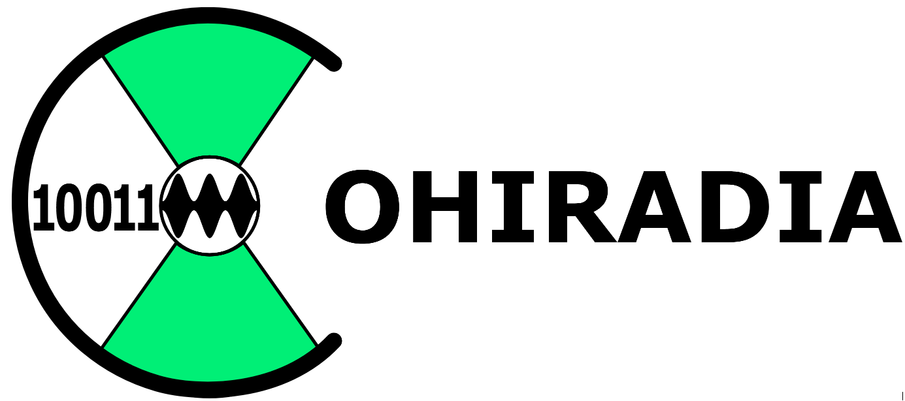

What is COHIWizard ?
COHIWizard is an application which allows for playback, recording, analysis and processing of broadband RF signals when using a STEMLAB125-14 by Red Pitaya . Main purpose is archiving AM radio bands like LW, MW, SW, VLF in the context of COHIRADIA but other purposes can be thought of. While recording the data is stored in IQ data files with 32 bit per sample (2 x 16 bits complex) and carries an extended wav-header in the standard format used for most software defined radios (SDR).
Appropriate recordings can be played back on historic Radio receivers with external antenna jack and all transmitters active at the time of the recording can then be tuned through and listened to on the radio. Detailed information for installation, hardware setup and an archive with many recordings from 2006 on can be found on COHIRADIA.
See a video example of playing back an archived file on an old tube radio:
